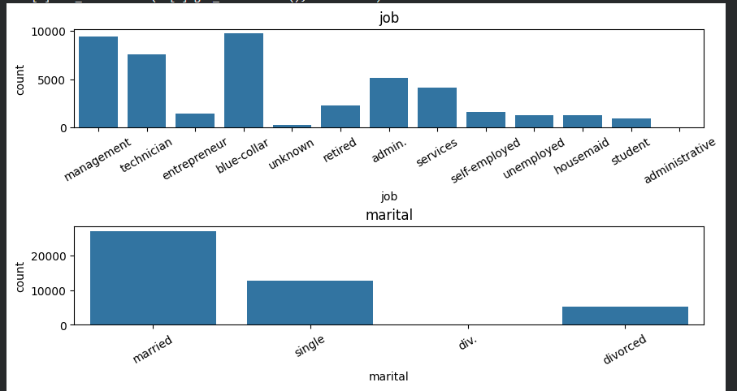
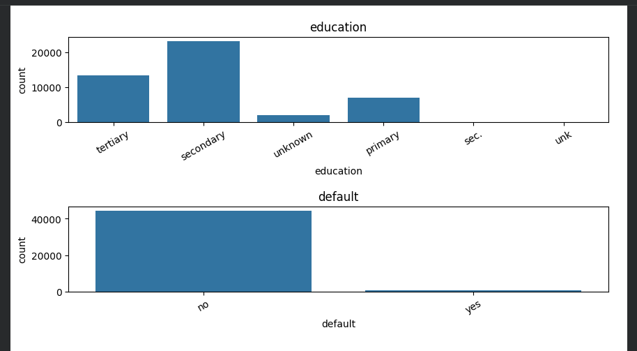
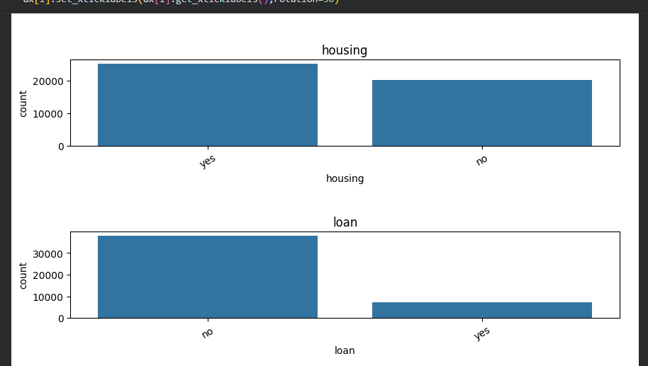
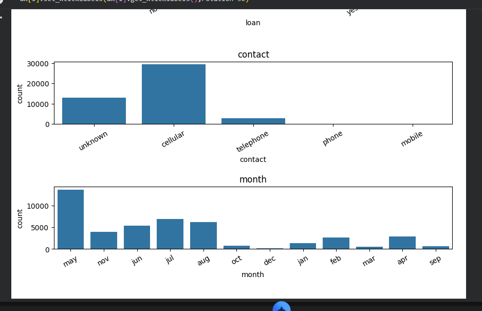
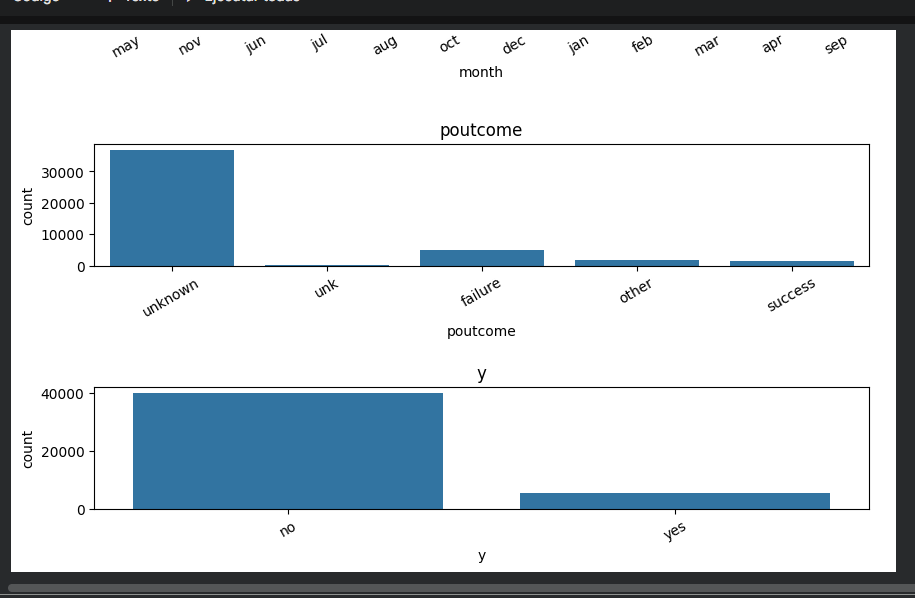

Preparación y análisis exploratorio de una base de datos bancaria utilizando Python y Pandas.
En este taller se trabajó con una base de datos perteneciente a una campaña de marketing de una entidad bancaria. El propósito principal fue realizar un proceso de limpieza, transformación y análisis exploratorio de los datos utilizando la librería Pandas de Python.
La calidad de los datos es fundamental para cualquier análisis, por lo que se realizaron diferentes procedimientos para corregir inconsistencias, estandarizar categorías y preparar la información para futuros estudios estadísticos o modelos predictivos.
Durante el desarrollo del taller se realizaron las siguientes actividades:
| Valor Original | Valor Corregido |
|---|---|
| admin. | administrative |
| div. | divorced |
| sec. | secondary |
| unk | unknown |
| phone | telephone |
| mobile | cellular |
import pandas as pd
import matplotlib.pyplot as plt
import seaborn as snsfrom google.colab import drive
drive.mount('/gdrive')ruta = '/gdrive/MyDrive/limpieza_banco/dataset_banco.csv'
data = pd.read_csv(ruta)print(data.shape)
data.head()
data.info()data.dropna(inplace=True)
data.info()cols_cat = ['job', 'marital', 'education', 'default',
'housing', 'loan', 'contact',
'month', 'poutcome', 'y']
for col in cols_cat:
print(f'Columna {col}: {data[col].nunique()} subniveles')data.describe()print(f'Tamaño del set antes de eliminar las filas repetidas: {data.shape}')
data.drop_duplicates(inplace=True)
print(f'Tamaño del set después de eliminar las filas repetidas: {data.shape}')cols_num = ['age', 'balance', 'day',
'duration', 'campaign',
'pdays', 'previous']fig, ax = plt.subplots(nrows=7, ncols=1, figsize=(8,30))
fig.subplots_adjust(hspace=0.5)
for i, col in enumerate(cols_num):
sns.boxplot(x=col, data=data, ax=ax[i])
ax[i].set_title(col)print(f'Tamaño del set antes de eliminar registros de edad: ')
print(data.shape)
data[data['age'] <= 100]
print(f'Tamaño del set después de eliminar registros de edad: ')
print(data.shape)
print(f'Tamaño del set antes de eliminar registros de duración: {data.shape}')
data = data[data['duration'] > 0]
print(f'Tamaño del set después de eliminar registros de duración: {data.shape}')
data = data[data['previous'] <= 100]for column in data.columns:
if column in cols_cat:
data[column] = data[column].str.lower()fig, ax = plt.subplots(nrows=10, ncols=1, figsize=(10,30))
fig.subplots_adjust(hspace=1)
for i, col in enumerate(cols_cat):
sns.countplot(x=col, data=data, ax=ax[i])
ax[i].set_title(col)
ax[i].set_xticklabels(ax[i].get_xticklabels(), rotation=30)data['job'] = data['job'].str.replace('admin.', 'administrative', regex=False)
data['marital'] = data['marital'].str.replace('div.', 'divorced', regex=False)
data['education'] = data['education'].str.replace('sec.', 'secondary', regex=False)
data.loc[data['education'] == 'unk', 'education'] = 'unknown'
data.loc[data['contact'] == 'phone', 'contact'] = 'telephone'
data.loc[data['contact'] == 'mobile', 'contact'] = 'cellular'
data.loc[data['poutcome'] == 'unk', 'poutcome'] = 'unknown'ruta_salida = '/gdrive/MyDrive/limpieza_banco/dataset_limpio.csv'
data.to_csv(ruta_salida, index=False)Antes de la limpieza el conjunto de datos tenía 45 215 registros. Al eliminar 8 filas con datos faltantes y 4 registros duplicados, el dataset resultante quedó con 45 203 registros.

Se observa que las ocupaciones con mayor cantidad de clientes son blue-collar, management y technician. Esto indica que gran parte de la población analizada pertenece a sectores laborales activos y estables.
En cuanto al estado civil, predominan los clientes casados, seguidos por los solteros. Los divorciados representan una proporción menor dentro del conjunto de datos.

La mayoría de los clientes posee educación secundaria, seguida por educación superior. Esto muestra que gran parte de la población cuenta con formación académica básica o avanzada.
Respecto a la variable de mora financiera (default), casi todos los clientes se encuentran al día con sus obligaciones financieras, lo que refleja una cartera relativamente sana para la entidad bancaria.

Se observa que una cantidad considerable de clientes posee préstamos de vivienda. Esto puede indicar estabilidad económica y acceso al sistema financiero.
Por otro lado, la mayoría de los clientes no tiene préstamos personales activos, lo que sugiere un nivel moderado de endeudamiento dentro de la población analizada.

El medio de contacto más utilizado por el banco fue el teléfono celular (cellular), lo que demuestra que las campañas se realizaron principalmente a través de dispositivos móviles.
El mes con mayor cantidad de contactos fue mayo, seguido por julio y agosto. Esto indica que durante esos periodos se concentró una mayor actividad comercial por parte de la entidad bancaria.

La variable poutcome representa el resultado de campañas de marketing realizadas anteriormente por la entidad bancaria. Se observa que la gran mayoría de los registros pertenecen a la categoría unknown, lo que indica que para la mayoría de los clientes no existe información disponible sobre campañas previas.
Las categorías failure, success y other representan una proporción mucho menor de la población, evidenciando que solo un pequeño grupo de clientes había participado en campañas anteriores con resultados registrados.
En la variable objetivo y, que indica si el cliente aceptó o no la oferta propuesta por el banco, se observa un claro predominio de la respuesta no. Esto significa que la mayoría de los clientes contactados no adquirió el producto ofrecido durante la campaña.
Por el contrario, la categoría yes representa una pequeña proporción de los registros, lo que evidencia una tasa de conversión baja, cercana al 10% de la población analizada.
Estos resultados sugieren que el banco debe enfocar sus estrategias en la identificación de perfiles con mayor probabilidad de aceptación. Los clientes que han tenido campañas exitosas anteriormente podrían representar un segmento con mayor potencial de conversión para futuras acciones comerciales.
El proceso de limpieza permitió mejorar la calidad de los datos, corrigiendo errores e inconsistencias que podían afectar futuros análisis.
A partir del análisis exploratorio se identificó que la mayoría de los clientes pertenece a sectores laborales activos, cuenta con educación secundaria y mantiene una situación financiera estable.
También se observó que la principal estrategia de contacto utilizada por el banco fue la telefonía móvil y que los meses de mayor actividad comercial fueron mayo, julio y agosto.
Adicionalmente, se observó que la tasa de conversión de la campaña es baja, ya que aproximadamente el 90% de los clientes contactados no aceptó la oferta propuesta. Este hallazgo evidencia la necesidad de mejorar las estrategias de segmentación para enfocar los esfuerzos comerciales en clientes con mayor probabilidad de aceptación.
También se identificó que la mayoría de los clientes no cuenta con historial registrado de campañas anteriores, por lo que futuras estrategias de marketing deberán apoyarse en otras variables como edad, ocupación, nivel educativo y situación financiera para mejorar la efectividad de las campañas.
Finalmente, la base de datos quedó preparada para realizar análisis más avanzados y desarrollar modelos predictivos que permitan identificar clientes potencialmente interesados en los productos financieros ofrecidos por la entidad.